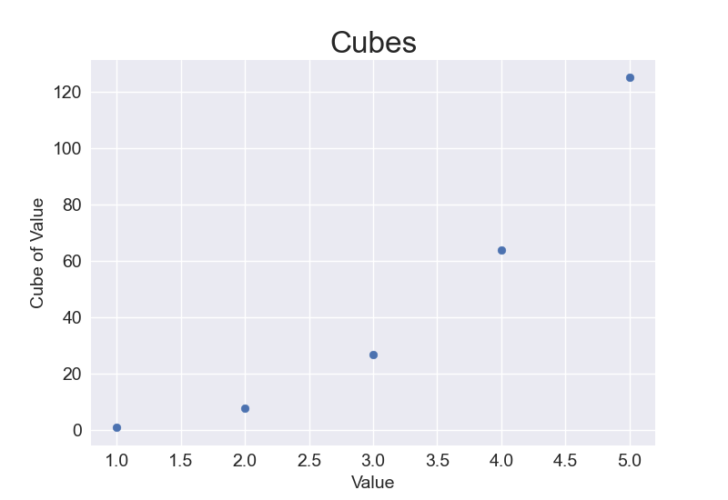
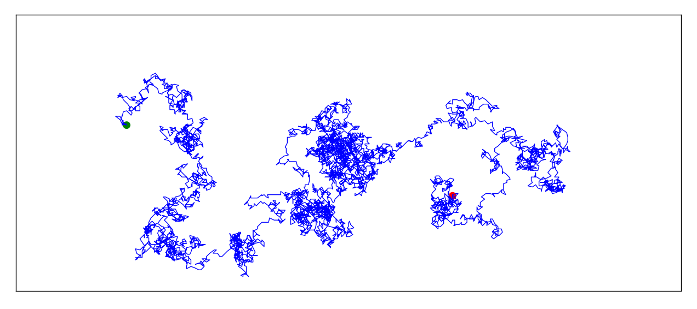
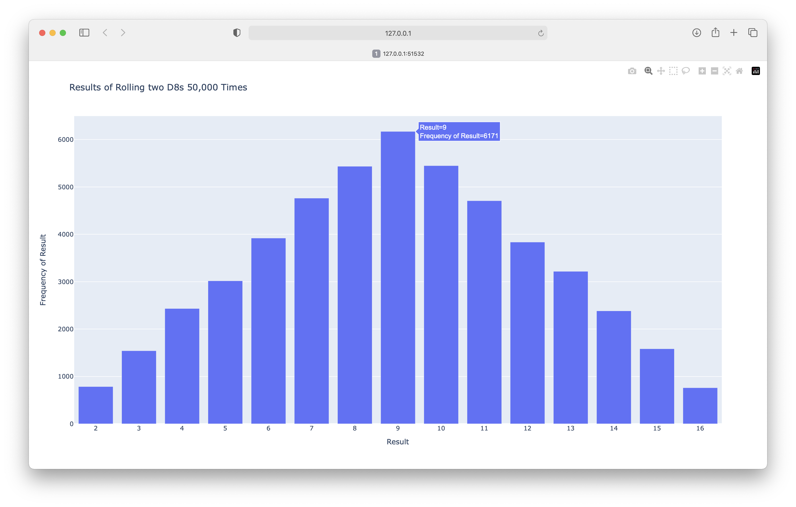
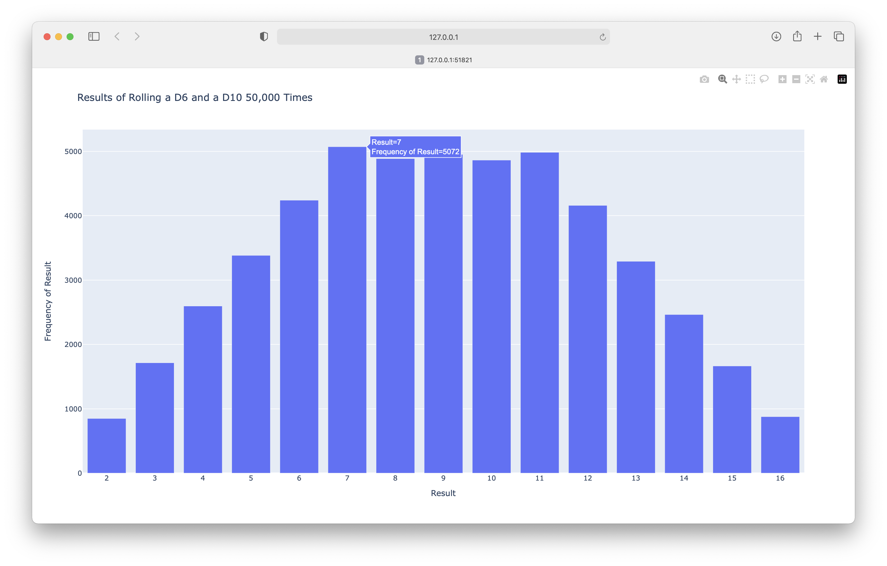

Solutions - Chapter 15
15-1: Cubes
A number raised to the third power is a cube. Plot the first five cubic numbers, and then plot the first 5,000 cubic numbers.
import matplotlib.pyplot as plt
# Define data.
x_values = [1, 2, 3, 4, 5]
cubes = [1, 8, 27, 64, 125]
# Make plot.
plt.style.use('seaborn-v0_8')
fig, ax = plt.subplots()
ax.scatter(x_values, cubes, s=40)
# Set chart title and label axes.
ax.set_title("Cubes", fontsize=24)
ax.set_xlabel('Value', fontsize=14)
ax.set_ylabel('Cube of Value', fontsize=14)
# Set size of tick labels.
ax.tick_params(axis='both', labelsize=14)
# Show plot.
plt.show()
Output:

Plotting 5000 cubes:
import matplotlib.pyplot as plt
# Define data.
x_values = range(1, 5001)
y_values = [x**3 for x in x_values]
# Make plot.
plt.style.use('seaborn-v0_8')
fig, ax = plt.subplots()
ax.scatter(x_values, y_values, c=y_values, cmap=plt.cm.Blues, s=10)
# Set chart title and label axes.
ax.set_title("Cubes", fontsize=24)
ax.set_xlabel('Value', fontsize=14)
ax.set_ylabel('Cube of Value', fontsize=14)
# Set size of tick labels.
ax.tick_params(axis='both', labelsize=14)
# Show plot.
plt.show()
Output:

15-2: Colored Cubes
Apply a colormap to your cubes plot.
import matplotlib.pyplot as plt
# Define data.
x_values = range(1, 5001)
y_values = [x**3 for x in x_values]
# Make plot.
plt.style.use('seaborn-v0_8')
fig, ax = plt.subplots()
ax.scatter(x_values, y_values, c=y_values, cmap=plt.cm.Blues, s=10)
# Set chart title and label axes.
ax.set_title("Cubes", fontsize=24)
ax.set_xlabel('Value', fontsize=14)
ax.set_ylabel('Cube of Value', fontsize=14)
# Set size of tick labels.
ax.tick_params(axis='both', labelsize=14)
# Show plot.
plt.show()
Output:

15-3: Molecular Motion
Modify rw_visual.py by replacing ax.scatter() with ax.plot(). To simulate the path of a pollen grain on the surface of a drop of water, pass in the rw.x_values and rw.y_values, and include a linewidth argument. Use 5,000 instead of 50,000 points to keep the plot from being too busy.
import matplotlib.pyplot as plt
from random_walk import RandomWalk
# Make a random walk.
rw = RandomWalk(5_000)
rw.fill_walk()
# Plot the points in the walk.
plt.style.use('classic')
fig, ax = plt.subplots()
point_numbers = range(rw.num_points)
ax.plot(rw.x_values, rw.y_values, linewidth=1)
ax.set_aspect('equal')
# Emphasize the first and last points.
ax.scatter(0, 0, c='green', edgecolors='none', s=100)
ax.scatter(rw.x_values[-1], rw.y_values[-1], c='red', edgecolors='none',
s=100)
# Remove the axes.
ax.get_xaxis().set_visible(False)
ax.get_yaxis().set_visible(False)
plt.show()
Output:

15-5: Refactoring
The fill_walk() method is lengthy. Create a new method called get_step() to determine the direction and distance for each step, and then calculate the step. You should end up with two calls to get_step() in fill_walk():
This refactoring should reduce the size of fill_walk() and make the method easier to read and understand.
from random import choice
class RandomWalk:
"""A class to generate random walks."""
def __init__(self, num_points=5000):
"""Initialize attributes of a walk."""
self.num_points = num_points
# All walks start at (0, 0).
self.x_values = [0]
self.y_values = [0]
def fill_walk(self):
"""Calculate all the points in the walk."""
# Keep taking steps until the walk reaches the desired length.
while len(self.x_values) < self.num_points:
# Decide which direction to go, and how far to go.
x_step = self.get_step()
y_step = self.get_step()
# Reject moves that go nowhere.
if x_step == 0 and y_step == 0:
continue
# Calculate the new position.
x = self.x_values[-1] + x_step
y = self.y_values[-1] + y_step
self.x_values.append(x)
self.y_values.append(y)
def get_step(self):
"""Calculate a single step in the walk."""
direction = choice([1, -1])
distance = choice([0, 1, 2, 3, 4])
step = direction * distance
return step
15-6: Two D8s
Create a simulation showing what happens when you roll two eight-sided dice 1,000 times. Try to picture what you think the visualization will look like before you run the simulation, then see if your intuition was correct. Gradually increase the number of rolls until you start to see the limits of your system’s capabilities.
import plotly.express as px
from die import Die
# Create two D8s.
die_1 = Die(8)
die_2 = Die(8)
# Make some rolls, and store results in a list.
results = []
for roll_num in range(50_000):
result = die_1.roll() + die_2.roll()
results.append(result)
# Analyze the results.
frequencies = []
max_result = die_1.num_sides + die_2.num_sides
poss_results = range(2, max_result+1)
for value in poss_results:
frequency = results.count(value)
frequencies.append(frequency)
# Visualize the results.
title = "Results of Rolling two D8s 50,000 Times"
labels = {'x': 'Result', 'y': 'Frequency of Result'}
fig = px.bar(x=poss_results, y=frequencies, title=title, labels=labels)
# Further customize chart.
fig.update_layout(xaxis_dtick=1)
fig.show()
Output:

15-7: Three Dice
When you roll three D6 dice, the smallest number you can roll is 3 and the largest number is 18. Create a visualization that shows what happens when you roll three D6 dice.
import plotly.express as px
from die import Die
# Create three D6s.
die_1 = Die()
die_2 = Die()
die_3 = Die()
# Make some rolls, and store results in a list.
results = []
for roll_num in range(50_000):
result = die_1.roll() + die_2.roll() + die_3.roll()
results.append(result)
# Analyze the results.
frequencies = []
max_result = die_1.num_sides + die_2.num_sides + die_3.num_sides
poss_results = range(3, max_result+1)
for value in poss_results:
frequency = results.count(value)
frequencies.append(frequency)
# Visualize the results.
title = "Results of Rolling three D6s 50,000 Times"
labels = {'x': 'Result', 'y': 'Frequency of Result'}
fig = px.bar(x=poss_results, y=frequencies, title=title, labels=labels)
# Further customize chart.
fig.update_layout(xaxis_dtick=1)
fig.show()
Output:

15-8: Multiplication
When you roll two dice, you usually add the two numbers together to get the result. Create a visualization that shows what happens if you multiply these numbers by each other instead.
import plotly.express as px
from die import Die
# Create two D6s.
die_1 = Die()
die_2 = Die()
# Make some rolls, and store results in a list.
results = []
for roll_num in range(50_000):
result = die_1.roll() * die_2.roll()
results.append(result)
# Analyze the results.
frequencies = []
max_result = die_1.num_sides * die_2.num_sides
poss_results = range(1, max_result+1)
for value in poss_results:
frequency = results.count(value)
frequencies.append(frequency)
# Visualize the results.
title = "Results of Multiplying Two D8s 50,000 Times"
labels = {'x': 'Result', 'y': 'Frequency of Result'}
fig = px.bar(x=poss_results, y=frequencies, title=title, labels=labels)
# Further customize chart.
fig.update_layout(xaxis_dtick=1)
fig.show()
Output:

15-9: Die Comprehensions
For clarity, the listings in this section use the long form of for loops. If you’re comfortable using list comprehensions, try writing a comprehension for one or both of the loops in each of these programs.
import plotly.express as px
from die import Die
# Create a D6 and a D10.
die_1 = Die()
die_2 = Die(10)
# Make some rolls, and store results in a list.
results = [die_1.roll() + die_2.roll() for roll_num in range(50_000)]
# Analyze the results.
max_result = die_1.num_sides + die_2.num_sides
poss_results = range(2, max_result+1)
frequencies = [results.count(value) for value in poss_results]
# Visualize the results.
title = "Results of Rolling a D6 and a D10 50,000 Times"
labels = {'x': 'Result', 'y': 'Frequency of Result'}
fig = px.bar(x=poss_results, y=frequencies, title=title, labels=labels)
# Further customize chart.
fig.update_layout(xaxis_dtick=1)
fig.show()
Output:
